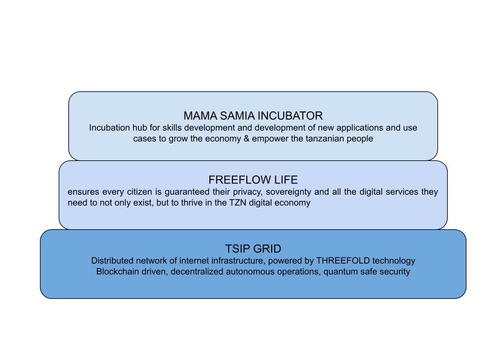
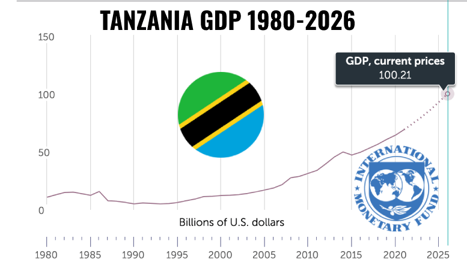
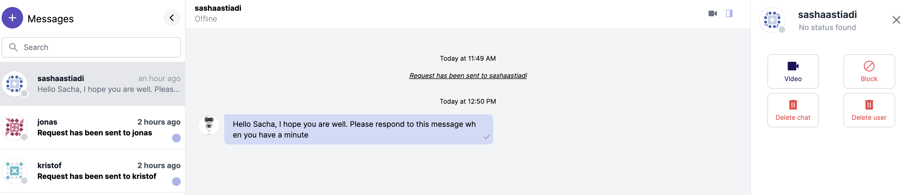
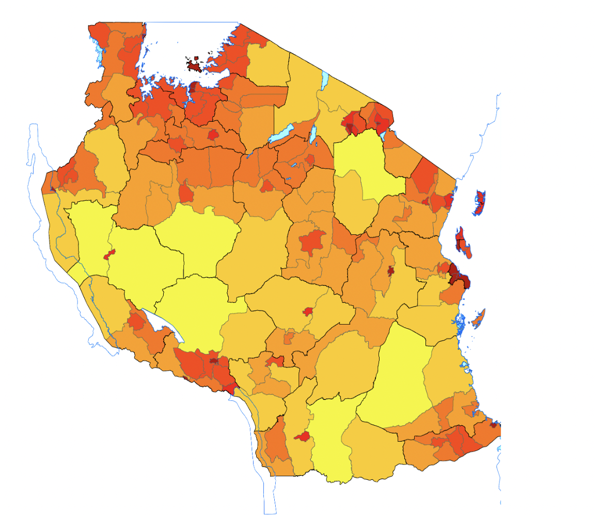
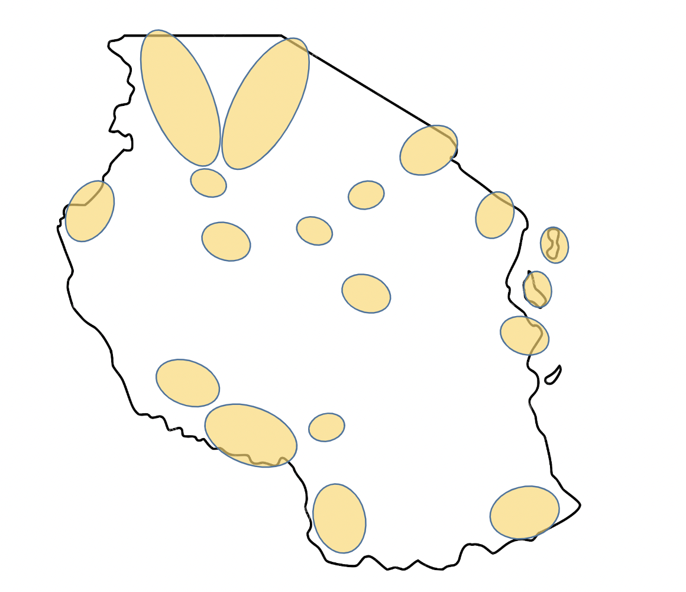
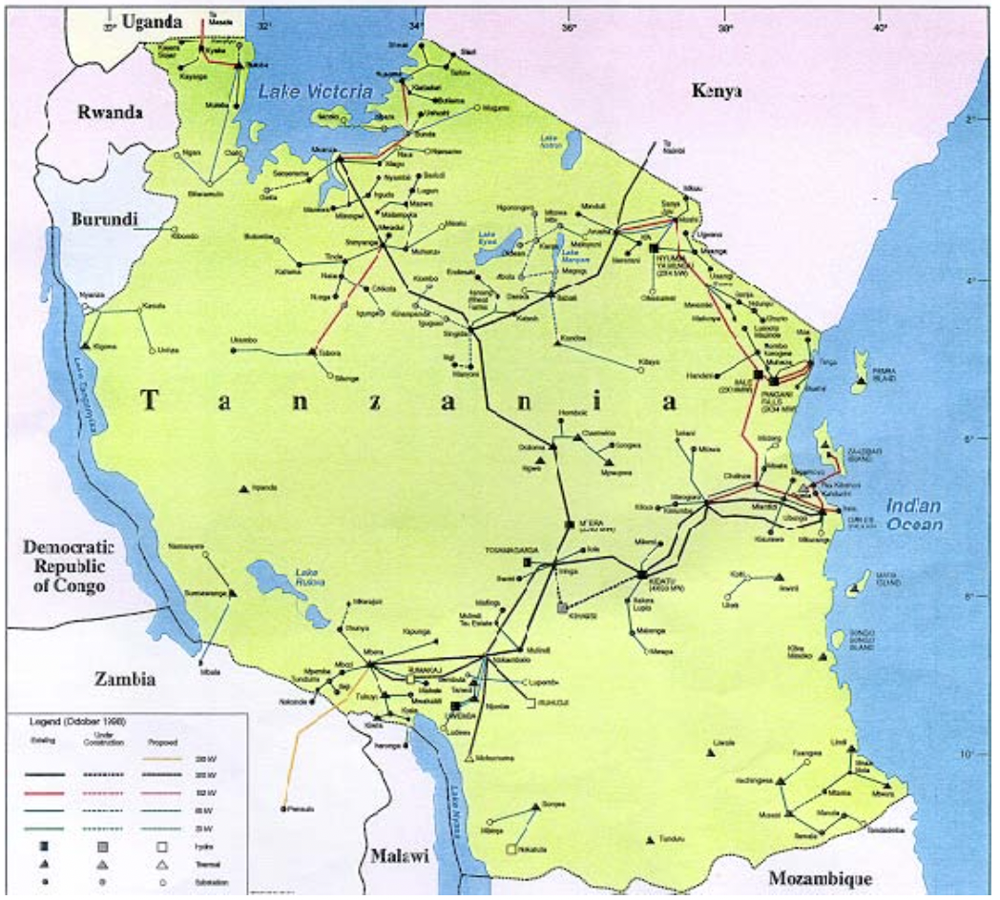
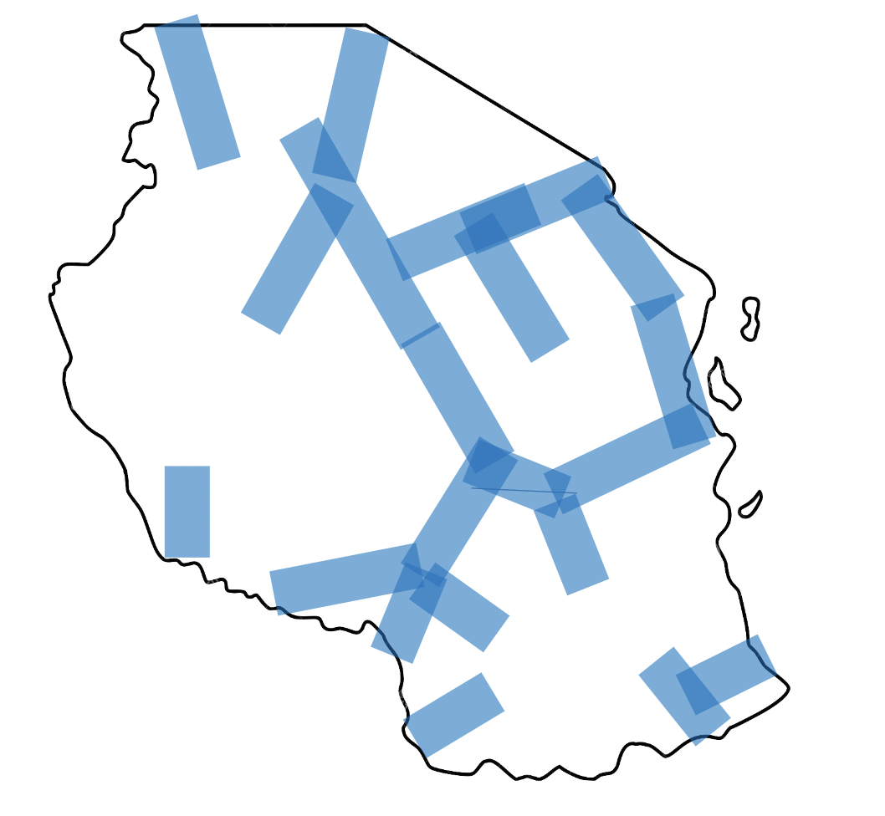
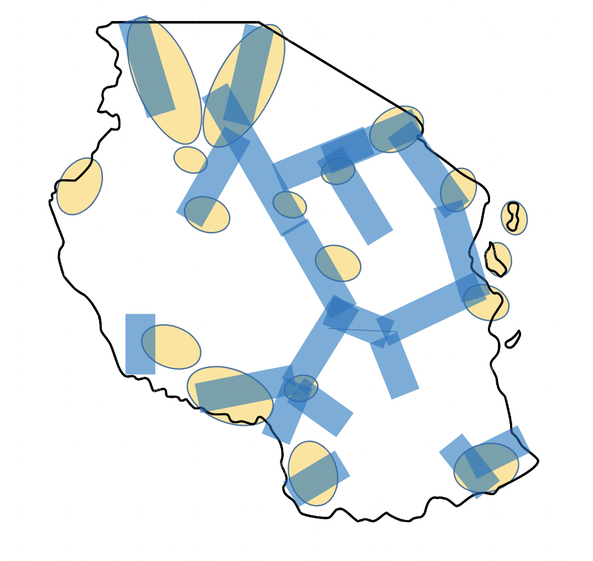

UNITED REPUBLIC OF TANZANIA

FEASIBILITY STUDY
FOR
TANZANIA SOVEREIGN INTERNET AND DIGITAL BACKBONE PLATFORM (“TSI”)
BETWEEN
MINISTRY OF INFORMATION, COMMUNICATION and INFORMATION TECHNOLOGY
AND
THREEFOLD NV
AUGUST 2022
Executive Summary
Affordable, performant and accessible internet for everyone, empowering the people of Tanzania and Zanzibar
If the Covid-19 pandemic has taught us anything, it is that digital is a necessity. It guarantees the continuity of services in the event of a crisis, and is also essential for ensuring a country’s competitiveness and growth.
To initiate Tanzania’s digital transformation and ensure the social, financial and digital inclusion of all its citizens, the country needs to embark on a digitisation strategy focused on:
Digital sovereignty and Unlocking of the Internet Economy Today, Tanzanias digitial economy wholly relies on US, Asia and European technologies, deployed and operated in these remote areas. This is a GDP drain for Tanzania as a country, it is GDP negative. To make Tanzanias economy GPD positive it has to start deploying, operating and creating local technology and use it to increase sovereignty of the country instead of digital dependency on the rest of the world.
A sustainable digital transformation can only be achieved if it is founded on digital sovereignty, which is the primary reason for the PPP between the Tanzanian public sector, private sector and Threefold to unlock the Tanzanian internet eocnomy.
Key to this strategy is establishing a sovereign internet infrastructure that ensures Tanzania's digital sovereignty and, more generally, the successful digitalisation of the economy and unlocking of the internet economy.
Three initiatives will spearhead the realization of Tanzania Digital Sovereignty and the unlocking of its Internet Economy.
1. Digitisation of Key Economic Sectors: Increasing national wealth through the building of an innovation and start-up ecosystem looks at digitalising key sectors of Togo’s economy (logistics, trade, agriculture, etc.), creating support programs for start-ups and using big data to help public and private sector decision-making processes.
2. Digitisation of Civil Services: The objectives pursued here aim to offer citizens better access to public services and to speed up administrative procedures Focused on , on the administrative gains made possible by digital technology, It covers the digitisation of administrative procedures and basic social services, the paperless management of financial flows (tokenization of civil services) and the training of the various segments of society in the use of technological tools.
3. Universal Access to Information: Knowledge is power and ensuring every Tanzanian citizen has affordable access to the wealth of information made possible by the www is key in the empowerment of the Tanzanian population.
Description of the Project
The Tanzania Sovereign Internet Platform (“TSIP”) as envisaged in the memorandum of understanding (see appendix A), is a end to end ecosystem blending people, technology and key principles in order to deliver Internet Infrastructure and digital services that ensure the privacy, sovereignty and empowerment of Tanzania and its people.
The purpose of the TSIP ecosystem is to UNLOCK THE INTERNET ECONOMY in Tanzania and empower ECONOMIC DEVLOPEMENT and SOCIAL UPLIFTMENT of its people.
The make up of such an ecosystem includes:

Soveriegn Internet Grid (powered by Threefold)
- a network of decentralised, autonomous and distributed edge micro data centre infrastructure forming a meshed internet grid.
- located entirely within Tanzania, providing national sovereignty over data and all associated revenue streams as well as security and immunity from disruption
- the foundational layer of the TSIP ecosystem, powered by Threefold technology, providing the compute, storage and network resources, enabling FreeFlow Life and further digital services to empower the nation of Tanzania
Digital Experiences
- the layer of digital services running of top of the grid infrastructure that give purpose to the soverign internet grid and bring true value to the people of tanznaia
- example: FREEFLOW LIFE
- a prime example of such a digital service is FREEFLOW LIFE, the primary internet experience of TSIP giving every TZN citizen their digital life in one experience.
- a universally accessible digital platform through which Tanzanians can access improved alternatives to commonly used global communications, media and productivity software;
- Freeflow Life ensures every citizen is guaranteed their privacy, sovereignty and all the digital services they need to not only exist, but to thrive in the TZN digital economy
- other key digital experiences intended for TSIP include:
- VIRTUAL HEALTHCARE DELIVERY
- REMOTE EDUCATION
- ...
Incubation Hub (Mama Samia Institute)
- An incubation hub to empower the development of further digital services to run on top of the TSIP platform and further empower and uplift the community of Tanzania. Such examples include:
- Virtual healthcare delivery
- Online education curriculum
- Agriculture improvements through data ownership
- Digital banking
- and much, much, much more possibilities
Three initiatives will spearhead the realization of Tanzania Digital Sovereignty and the unlocking of its Internet Economy.
Market Assessment and Strategy
Current Economic Landscape
- The Economy of Tanzania in 2021 With an average real GDP growth rate of 6.3% over the past decade (2010-2019),
- Tanzania is among the fastest-growing economies in Africa and in the world.
- Yet, widespread poverty persists with 49 percent of Tanzania’s population living below the international extreme poverty line of $1.90 per day (World Bank, 2011)
- In 2020, the real GDP of Tanzania grew by +4.8% reaching USD 64.4 billion, and grew by +7% in 2019 to reach USD 60.8 billion In April 2021,
- Tanzania’s new president Samia Suluhu Hassan gave her first speech to the parliament, mentioning the priorities of the Sixth Phase Government in the next five years to reach a GDP growth rate of at least 8% yearly.
- Notable sectors of the Tanzanian economy are tourism, mining, construction, agriculture, and manufacturing. Tanzania Key Economic Sectors According to the economic data included in the National Data of Tanzania Mainland of 2013-2019 by the National Bureau of Statistics, at current market prices,
- Services made the highest shares of GDP (40.0%)
- followed by Industry and Construction (31.1%)
- Agriculture, Forestry and Fishing (28.9%)

Among Tanzania’s predominantly rural population (73 percent), economic growth has been limited. Inclusive, broad-based growth is hindered by low productivity growth in labour-intensive sectors like agriculture, which employs 77 percent of working age adults. The agriculture sector grew just 4 percent per year over the past decade.
The Tanzanian private sector’s vast financial resources and expertise in market-based solutions have the potential for tackling systemic societal challenges. Currently employing about 70 percent of the youth in Tanzania, the private sector provides a critical pathway to self-reliance.
USAID objectives include advancing Tanzania’s socio-economic status toward middle-income status by 2025; sustaining inclusive, broad-based economic growth; supporting private sector investment in energy as well as agriculture and natural resource-based tourism; and increasing the access of women and youth to resources and knowledge that allow them to take advantage of opportunities in these sectors.
Source: (https://www.tanzaniainvest.com/economy)
Market Feasibility Study
Market Feasibility Study Criteria
Market Feasibility Study Results
Economic Empowerment
TSIP must enable the economic empowerment of Tanzania, ensure the digital sovereignty of the nation and unlock the Tanzanian internet economy. TSIP is the secure, sovereign and sustainable digital infrastructure and services that empowers each and every TZN citizen to thrive in the digital economy and partake in the economic success of their country.
TSIP should empower the economic and overall well being of every citizen, promoting new job creation and contributing toward the following metrics of Tanzania economy:
- Accelerate Existing Industry Performance: Accelerating performance in existing industry sectors
- Tourism
- Mining
- Construction
- Agriculture
- Manufacturing
- Agriculture
- New industry development: opening new industry sectors and contributing nett new GDP to Tanzania overall economic development
- Healthcare
- information technology
- Healthcare
- Financial services
Social Impact
The World Bank (WB) upgraded Tanzania’s country classification by income level from low income to lower-middle income in 2020-21. The WB assigns the world’s economies to four income groups—low, lower-middle, upper-middle, and high-income countries, based on their GNI per capita in current USD.
- Low income is defined as less than USD 1,036 in 2020 (USD 1,026 in 2019)
- Lower-middle income is between USD 1,036 and USD 4,045 (USD 1,026 – 3,995 in 2019)
- upper-middle income is between USD 4,046 – USD 12,535 (USD 3,996 – 12,375 in 2019)
- high income is any higher than USD 12,535 (>USD12,375 in 2019).
Read more at: https://www.tanzaniainvest.com/economy/middle-income-country-status and follow us on www.twitter.com/tanzaniainvest
TSIP must enable the social upliftment of Tanzanian people and afford every citizen universal and impartial access to the necessary civil services to ensure their individual success and well being, Critical success factors in delivering on the above are the fundamental attributes of TSIP, including:
Sovereign Digital Identity
In the digital era, the starting point to our success as digital citizens is ensuring our digital sovereignty identity. Freeflow life is our digital twin in the internet economy and is a verified and immutable representation of us as a digital citizen.
Looking at all of us as an internet and a country citizens our identities are not linked between the physical and the digital world. Almost every country, region, city or social community has their own requirements and way of handling identity. This is replicated in the digital world a 100 times over where every online company, service or platform has their own digital identity requirements.
This complete fragmentation of identities leads to a lot of complexity for people (citizens) to manage their identity. Most people manage this complexity by using the same username and password everywhere. This lowers the security of these identities and causes a lot of breaches because once one service or platform is hacked this potentialy exposes the username and password for many other platforms as well.
One, souvereign, technically well designed and built digitial identity solves all of these issues.
Data Sovereignty & Privacy
For Tanzanian people most (if not all) of the internet services that are available are invented and operated by foreign companies using private technology. The result of this a working service, but also that all (meta) data created and stored is governed by foreign laws.
Citizens, companies and the government of Tanzania have little to no control over what happens with the data processes and stored in these online services. The use of foreign services results in a net negative contribution to the Gross Domestic Product.
To achieve data sovereignty and privacy the data and processing of it needs to be done on Tanzanian soil, governed by Tanzanian law and create plus operated by Tanzanian inhabitants.
Digital Productivity
Digital disruption may be an accomplished fact for consumers enjoying ever more innovation, and for the firms driving it, but there is little evidence of macroeconomic disruption. Despite the relentless transformation of the user experience, the idea of meaningfully higher productivity growth across the economy remains wishful thinking. Especially for Tanzania where most of the digitial disruption has happened by large foreign companies who have extracted a lot of value from the Tanzanian economy.
To make the maximum productivity impact first the value extraction from tha Tanzanian economy to the digital giants has to decrease and if possible stopped. For this to happen Tanzania needs to invest and create sovereign solutions to these global giants. This is the first step to start building local momentum to help to increase the productivity in the broadest sense to help the Tanzanian economy to get a boost from digitial services and enablement.
Universal Digital Access
- Affording every citizen universal access to valuable content, networks and resources to promote the health, education and welfare of the people of Tanzania, including:
- Universal access to education
- Universal access to financial services
- Universal access to healthcare services
- Universal access to information in general
TSIP: Healthcare Use Case
Healthcare is a fundamental right for every single member of society and the Tanzaznian goverment carries the responsibility for healthcare delivery as a primary civil service.
The challenge in most emerging markets is the lack of healthcare professionals and infrastructure relative to the needs of the community and the size of the population itself. This imbalance poses significant challenges for goverment who simply do not have enough budget, skilled professionals nor infrastructure to meet the needs of its citizens in this regard.
Based on our research, the situation on the ground in Tanzania mirrors this exact dilemma whereby the shortage of budget, infrastructure and healthcare professionals relative to the needs of the cmmunity results in sub par service delivery on behalf of the government.
INSERT TZN HEALTHCARE STATS HERE ****
So how do we scale and optimise healthcare delivery given these constraints ?
The simple answer to scaling healthcare delivery given these constraints is:
1. DATAFICATION
2. VIRTUALISATION
3. TOKENISATION
explained as follows...
1. Datafication
By definition, is a technological trend turning many aspects of our life into datail which is subsequently transferred into information realised as a new form of value
In simple terms, this is the collection of healthcare data and aggregation of medical records to establish a full patient medical history (medical 360), gain key insights and idenitfy macro health trends and unlock the value of real time data for the benefit of every citizen/ patient.
This process involves both historical data aggregation and real time data collection:
Historical Data
Based on a an EMR (electronic medical record) is the aggregation of all historical data from all possible legacy data sources to establish a single and full perspective on a patient history. This single healthcare record per citizen is:
- guaranteed private and always in the control of the citizen who owns that data
- stored in quantum safe storage on the TSIP network
- secured and ensured immutable by the TSIP blockchain
Real Time Data
Based on being able to collect and diagnose real time information from patients via a cirtual healthcare platform, enabling healthecare professionals more insights and data points on which they can make a diagnosis and recommend an appropriate treatment protocol. In this case:
- data collection is deviceless meaning the patient needs nothing more than a smartphone to provide this information realtime, in virtual consultation
- data is measured by the smartphone camera and uploaded to the patient EMR record for diagnosis by the healthcare professional
- data is collecte dreal time but is stored and associated to an active consultation which can be queued awaiuting the availability of a healtcare professional who can in due course, use the data to formulate a diagnosis and recommedn a treatment proitocol.
1. VIrtualisation:
In computing terms, virtualisation is the act of creating a virtual (rather than actual) version of something at the same abstraction level.
In simple terms, to virtualise healthcare delivery means to digitalise the whole patient experience so far as possible. In essence, make the end to end healthcare process an online experience and minimise the need for a patient to visit a healthcare facility and see a healthcare professionals in person.
In practice, this is essentially telemedicine, but in this case, with some fundamental diofferences vs what the industry today recognises. Telemendicine has advanced our ability to deliver healthcare signifucantly by virtuakisibg the atient epxerince and essentially bringing healthcare professionals to the patient via an application. Hoiwever, whist this has realised signifuicant efficiency in healthcare service delivery, there are stiull obvious limitations in telemedicine as it is today with regards to the scope of practice that can be delivered via a virtual service.
The limitations referred to above is that only minor conditions can be consulted and diagnosed via a virtual platform given the lack of data available between the patienta nd the healthcare proifessional. This lack of hiostiorical and more importantly, real time data is a major limiting factor in the types of cases that can be dealt with in an online virtual experience
More on this key constraint and this can be overcome in the s ection below: ###
Tokenisation:
In technical terms, Tokenisation is the process by which an issuer creates digital tokens on a distributed ledger or blockchain, which represent either digital or physical assets.
In simple terms, a token is a digital representation of something that has inherent value. This can be financial, asset based or other.
Relative to this context, tokenisation means the digitisation of the health budget to allow for simple and fair distribution of value.
In this case, we refer to a ditial token, backed and representing the national health budget, remittable for the redemption of healthcare services on behalf of the government by the citizens of Tazania.
In practice, the process can be as simple as follows:
- the national healthcare budget is tokenised and minted on the blockchain in a fully automated process
- these digital tokens, representing healthcare services by the government, are distributed electronically to the digital wallet of each citizen (typically the digital wallet is on their cellular phone) on a equitable basis.
- citizens then have the means to redeem virtual healthcare services redeemed using the inherent value ion the digital tokens they were issued.
This process of tokenisation ensures:
- equitable distribution of value between all citizens
- concise and immutable management of budget and resources
- key insights and data trends such as:
- how healthcare infrastructure and resources are utilised
- spend per citizen on healthcare
- annual cycles in health related problems
- geographical data insights realtive to spending and health trends
- etc
Solution Overview
A truly virtualised healthcare solution, including tokenisation and datafication (as above) is underpinned by the decentralised, autonomous infrastructure of TSIP.
TSIP delivers on the fundamental requirements to ensure the Virtual Healthcare solution lives up to its promise of:
- privacy
- soverigenty
- security (quantum safe)
- immutability
- scalability
- ...
Architecturally, the virtual healthcare solution is depicted as follows:
Layer 0: TSIP Network Layer 1: Threefold Blockchain Layer 2: Experiences layer where virtual healthcare platform is deployed
Key desigbn principles:
- Patient Centric: conversely to the industry norm, VHP is designed around the patient, putting the patient first. Historically, the patient would always go tot he practitioner, at the halethcare facility. Medi.me is 100% patient centric and birng all practitioners, insurers, service providers to the patient
- Verifiable Identification: all actors within the ecosystem are verified by a soveriegn identity. No BAD Actors
- Immutable Records:
- Tokenised Assets
Digital enablement

Communication tool: Chat
The chat communication tools presents a simple interface to manage individual and group messaging. The interface presented is very similar to mainstream messaging platforms but works in a very different way.
Centralized messaging service always have a third party (company) involved. A message would follow the following path:
graph LR
subgraph Individual A;
INDIVIDUALA(Person A);
end;
INDIVIDUALA .->|browser| MESSAGINGA;
MESSAGINGA -->|browser| INDIVIDUALA;
subgraph Messaging provider;
MESSAGINGA(messaging platform);
end;
INDIVIDUALB(Person B) -->|browser| MESSAGINGA;
subgraph Individual B;
MESSAGINGA .->|browser| INDIVIDUALB;
end;
The problem here is that the messaging provider sits in the middle and has access to all messages passing through its messaging platform. This also means that messaging providers can (or can be told to) do the following:
- do machine learning on message content and/or message volume, frequency, size and all sort of other data.
- expose, compile and sell machine learning outcome (metadata)
- provide access to meta data or actual messaging information to other companies or governing bodies
- and much, much more.
There are numerous documentaries and news stories out there that prove that this is the case. A decentralized messaging platform avoids all of this
Decentralized messaging sends and receives messages from private messaging instances to the receiving party's private (messaging) instance. It does not have a central man in the middle. There are two main types of decentralized messaging in this capability:
- private chat: private entity to private entity
- group chat: one private entity creates and hosts the "group" and all the other members are invites to post and receives message from this group. The entity that starts the group also sets the groups "rules"
Private Chat
With private chat we mean a chat between to entities. These entities could be individuals, organizations, companies, clubs, basically anything. The chat is a one to one chat and information (data) is exchanged between two private, secure and personal messaging platforms.
- a chat starts with inviting the other persons twin (messaging and other services platform ). In this case the twin of the other person needs to be found and sent an invite message.
- if the person accepts the invite a secure connection allows messages to be send person to person without a third party in the middle. Only the (twins of) two people involved has access tot he message data (and metadata)
graph LR
subgraph Individual A
INDIVIDUALA(Person A)
INDIVIDUALA .->|browser| TWINA
TWINA -->|browser| INDIVIDUALA
end
TWINA(Twin A - Chat Functionality) .->|secure network| TWINB(Twin B - Chat Functionality)
subgraph Individual B
TWINB .->|browser| INDIVIDUALB
INDIVIDUALB(Person B) -->|Browser| TWINB
TWINB -->|secure network| TWINA
end
The chat functionality allows most (if not all) of the standard functionality know from many centralized platforms:
- send text message
- send voice message
- message reply
- message forward
- send photo/file/
From the chat function you can also initiate video conference, and have control over accepting, deleting and blocking users. 
Group Chat
Group chat is unique to this peer to peer chat platform. The group functionality is initiated by the group creator and this action creates the group function on the initiators messaging platform (twin). The group is then formed by inviting other entities and when they accept they get read and write access in the group messaging functionality.
graph LR
subgraph Individual A
PERSONA(Person A) --> TWINA
TWINA --> PERSONA
TWINA(Twin A - Chat Functionality) --> GROUP(group)
GROUP .-> TWINA
end
GROUP .-> TWINB
subgraph Individual B
TWINB(Twin B - Chat Functionality) --> GROUP
TWINB --> PERSONB
end
PERSONB(Person B) --> TWINB
subgraph Individual C
GROUP .-> TWINC
TWINC(Twin C - Chat Functionality) --> GROUP
TWINC --> PERSONC
end
PERSONC(Person C) --> TWINC
GROUP .-> TWIND
subgraph Individual D
TWIND(Twin D - Chat Functionality) --> GROUP
TWIND --> PERSOND
end
PERSOND(Person D) --> TWIND
Look and feel in a browser


Communication tool: Video
A truly peer to peer video chat experience starting from your digital twin to your guests', without stopping by a data center in between. Of course, free.
Current world video conferencing services use service provider and centralized software installations to present services to businesses and consumers. Take for example to users in Zanzibar that wish to communicate through zoom (or google meet, or Microsoft Teams, principle stays the same). The will connect from their laptops/phones to a centralized service and the traffic will be routed from both of their devices to a centralized service datacenter far away.
In principle this looks like
graph RL
subgraph Individual A
INDIVIDUALA(Person A)
end
INDIVIDUALA .->|browser| MESSAGINGA
MESSAGINGA -->|browser| INDIVIDUALA
subgraph Video service provider
MESSAGINGA(Video service platform)
end
INDIVIDUALB(Person B) -->|browser| MESSAGINGA
subgraph Individual B
MESSAGINGA .->|browser| INDIVIDUALB
end
And if we expand this to a world map it would look somethingg like this:
 )
)
This does not lead to create the best experience and over all, it is very wasteful with a number of (scarce) resources.
The solution to this problem is to have a video conference solution that works peer to peer.
graph RL
subgraph Individual A
INDIVIDUALA(Person A)
INDIVIDUALA .->|browser| TWINA
TWINA -->|browser| INDIVIDUALA
end
TWINA(Twin A - Video Conference capability) .->|Browser| INDIVIDUALB
TWINA .->|Browser| INDIVIDUALC
TWINA .->|Browser| INDIVIDUALD
subgraph Individual B
INDIVIDUALB(Person B) -->|Browser| TWINA
end
subgraph Individual C
INDIVIDUALC(Person C) -->|Browser| TWINA
end
subgraph Individual D
INDIVIDUALD(Person D) -->|Browser| TWINA
end
If we build a video conferencing system that follows this principle we can be much more effective. Back to the example earlier the two people in Zanzibar would be able to communicate as follows:

Product features
-
-
-
- etc.
Education
Education is a sector that still relies on traditional teaching methods, a teacher, a classroom, a black (or white) board, books, paper and pencils. This method has been in use for hundreds of years. In this digital age there the classroom can be a digital classroom, with a teacher teaching and all of the rest of the required items can be digitised as well.
Traditional learning is based on a live teacher, teaching an audience in a classroom. This works, however is has a number of restrictions which makes that work for a limited number of pupils, and not everywhere because of the necessity to have live teachers and pupils. In this digital world we can record end present the learning materials in a digital manner to a much larger audience that a single classroom. Classes, or better while curriculum can be digitised and share along a much larger group of pupils spanning a vast geographic area.
The Covid-19 pandemic has proven that remote teaching is possible and that the current technology allow for this. This experience was still based on the standard teacher - pupil relationship and numbers for live teaching. Another technology, a video sharing platform has proven that storing videos and sharing videos is a effective manner to reach a very large number of viewers (youtube.com).
Taking the learnings from both of these current use cases we have created Sikana. Improve your life - one skill at a time. Sikana is a free education platform, with more than 4 billion views, aiming to deliver quality education and necessary skills to everyone. The software can be installed on threefold nodes and deployed regionally so that bandwidth requirements are minimised because it is a decentralized online education platform.
graph TD
subgraph Region A
subgraph Class A
INDIVIDUALA(Student 1)
INDIVIDUALB(Student ...)
INDIVIDUALC(Student N)
end
subgraph Class B
INDIVIDUALD(Student 1)
INDIVIDUALE(Student ...)
INDIVIDUALF(Student N)
end
end
VIDEOPLATFORM(central video sharing platform)
subgraph Region B
subgraph Class C
INDIVIDUALG(Student 1)
INDIVIDUALH(Student ...)
INDIVIDUALI(Student N)
end
end
VIDEOPLATFORM .-> INDIVIDUALA
VIDEOPLATFORM .-> INDIVIDUALB
VIDEOPLATFORM .-> INDIVIDUALC
VIDEOPLATFORM .-> INDIVIDUALD
VIDEOPLATFORM .-> INDIVIDUALE
VIDEOPLATFORM .-> INDIVIDUALF
VIDEOPLATFORM .-> INDIVIDUALG
VIDEOPLATFORM .-> INDIVIDUALH
VIDEOPLATFORM .-> INDIVIDUALI
To scale such a solution for many classrooms in many schools and in many different regions put enormous requirements and stress on the central video sharing platform.
Decentralized video sharing as an education platform as a platform will lower the requirements on the education / video sharing platform and creates, stores and distributes educational content from within a region, or even from within a school. This allows this education solution to educate everywhere, even if there is no internet connection. A simple wifi router that connects devices to the educational platform is all that is needed.
graph TD
subgraph Region A
INDIVIDUALAA(Student 1)
INDIVIDUALAC(Student ...)
INDIVIDUALAD(Student N)
VIDEOPLATFORMA(Local video sharing Capability)
VIDEOPLATFORMA .-> INDIVIDUALAA
VIDEOPLATFORMA .-> INDIVIDUALAC
VIDEOPLATFORMA .-> INDIVIDUALAD
end
subgraph Region B
INDIVIDUALBA(Student 1)
INDIVIDUALBC(Student ...)
INDIVIDUALBD(Student N)
VIDEOPLATFORMB(Local video sharing Capability)
VIDEOPLATFORMB .-> INDIVIDUALBA
VIDEOPLATFORMB .-> INDIVIDUALBC
VIDEOPLATFORMB .-> INDIVIDUALBD
end
subgraph Region C
INDIVIDUALCA(Student A)
INDIVIDUALCC(Student ...)
INDIVIDUALCD(Student N)
VIDEOPLATFORMC(Local Video sharing capability)
VIDEOPLATFORMC .-> INDIVIDUALCA
VIDEOPLATFORMC .-> INDIVIDUALCC
VIDEOPLATFORMC .-> INDIVIDUALCD
end
VIDEOPLATFORMA .->|curriculum updates| VIDEOPLATFORMB
VIDEOPLATFORMB .->|curriculum updates| VIDEOPLATFORMC
VIDEOPLATFORMA .->|curriculum updates| VIDEOPLATFORMC
VIDEOPLATFORMC .->|curriculum updates| VIDEOPLATFORMB
VIDEOPLATFORMC .->|curriculum updates| VIDEOPLATFORMA
VIDEOPLATFORMB .->|curriculum updates| VIDEOPLATFORMA
4BILLION COURSES DELIVERED
Our local infrastructure ensures data locality.
Over 3,000 Videos
We fuel content production through our network.

Office Tools
The internet offers a number of office suites that you can use as a service. Microsoft 365, Google Doc are the marketleaders and then there are a number of alternatives in local markets or in the oupen source community.
All office tools are provided in a centralised manner which means that all application and data processing activities happen in a large central datacenters and also data storage is done in that same datacente.
graph RL
subgraph Location B
subgraph Individual B
INDIVIDUALB(Individual B)
end
subgraph Individual A
INDIVIDUALA(Individual A)
end
end
INDIVIDUALA .->|browser| OFFICETOOLA
OFFICETOOLA -->|browser| INDIVIDUALA
INDIVIDUALB .->|browser| OFFICETOOLA
OFFICETOOLA -->|browser| INDIVIDUALB
subgraph Location A
subgraph Office Tool Provider
OFFICETOOLA(Office Tool Platform)
DATASTORE(Data Storage)
OFFICETOOLA --> DATASTORE
DATASTORE --> OFFICETOOLA
end
end
Although functionally this setup provides good co-working capabilities we see that both co-workers are using a central facility and the data is stored in that serivce provides datacenter. This is how most online services work and most online service provider exist in the US, Europe and Asia. This present challenges with regards to data ownership, sovereignty and all sort of other legal challenges.
Office tools can be deployed locally if and when there is a digital infrastucture that can process and store data. The Twin technology allows the office tools to be run in country, owned by the individual or company and therefore all the names challenges and legal complexity fade.
The principle of doing it that way would look as follows:
graph RL
subgraph Location A
INDIVIDUALA(Individual A)
subgraph Twin A
OFFICETOOL(Office Capability)
DATASTORE(Data Storage)
OFFICETOOL --> DATASTORE
DATASTORE --> OFFICETOOL
end
INDIVIDUALA .->|browser| OFFICETOOL
OFFICETOOL -->|browser| INDIVIDUALA
end
subgraph Location B
INDIVIDUALB(Individual B)
end
INDIVIDUALB .->|browser| OFFICETOOL
OFFICETOOL -->|browser| INDIVIDUALB
subgraph Location C
INDIVIDUALC(Individual C)
end
INDIVIDUALC .->|browser| OFFICETOOL
OFFICETOOL -->|browser| INDIVIDUALC
subgraph Location ...
INDIVIDUALD(Individual ...)
end
INDIVIDUALD .->|browser| OFFICETOOL
OFFICETOOL -->|browser| INDIVIDUALD
This way, person A is providing the Office tool from his twin and invites other people to cooperate in this office tool. The Twin can run anywhere (as determined by the operator, person A). With this priciple we can create individuals or companies that operate and own their own office tool and datastorage platform.

Surf safe
Browsing the internet present risks. There are many sites which have malicious code embedded in what look like harmless web pages. This malicious content gets uploaded to your browser and might trick you in agreeing malicious code in your local browser on you local machine. This is a fairly common practice and people are being tricked into providing information of access to information which they should not.
The Surf Safe option of the twin provider a virtual browser on the twin that browses the internet on behalf off the person who operates the twin.
graph RL
subgraph Person A
PERSONA(Browser A)
end
subgraph Website
WEB(Any website)
end
PERSONA .->|Content GET request| WEB
WEB -->|Content| PERSONA
In order to make this safe, the Twin can perform the browsing activities and send the rendered screen(s) back to the person that is browsing as a stream, much like a netflix stream comes to the browser.
graph RL
subgraph Person A
PERSONA(Browser A)
TWINA(Twin A - virtual browser)
end
PERSONA .->|Stream Input| TWINA
TWINA .->|Content GET request| WEB
subgraph Wesite
WEB(Any website)
end
WEB -->|Content| TWINA
TWINA -->|Stream Internet Content| PERSONA
River
Need to research what the river service is.
Wallet exchange

Code developing
Code development platform that manages you code in a git (like gitea). Your code is stored in a secure (quantum secure) environment in you own digital sovereign space. All the regular interfaces (ssh, https and more) are available to users and to groups of users allowing you and your development group.
Features:
- 1 Hello World!
- 2
- 3
Benefits:
- 1
- 2
- 3
Technology Feasibility
Technical requirements
The feasibility study is architected around the Tanzanian countries demographics and technical infrastructure availability. For a decentralized internet priority number one is to model it around communities and size around community / population density. The driver is to have digital assets located as close as possible to the actual owner of the digital asset (data). Demographic data drives the initial layout of the local internet structure.
The second driver is utility availability. The country utilities which are major drivers for this are power and network (internet) connectivity. Power and internet access availability is considered in two categories:
- existing real estate with reliable power and network connectivity
- existing real estate without reliable power and network connectivity
Initially we are going to focus on real estate that has existing reliable power and network available. The process to determine what areas are in scope for the feasibility study to prove that the internet infrastructure is able to power enablement use cases will follow these technical requirements, in the following order:
- population density
- power and network availability and reliability
- access to real estate
Population density
Decentralised internet deployments follow population distribution. Denser areas require more local capacity (more and larger deployments) while less densely populated areas can have sparser (and smaller deployments). For the technical design of capacity instances and sizing population demographics are key drivers.
Categories:
- Densely populated (numbers to be defined)
- Medium populated (numbers to be defined)
- Sparsely populated (numbers to be defined)

This is a dated population density overview which provides a first insight into the population spread in Tanzania. From the density map we can extract a key focus are map which looks liek this:

These highlighted areas are the areas that are of interest because they will have more likely than not all the required infrastructure and utility available to do a simple rollout of digital enabling infrastructure layer.
Power availability and reliability
Power availability is a key technical driver for capacity deployments. Power availability, quality and reliability are significant drivers for deployments
Categories:
- Power type 1: Grid power, 24*7 available grid power + backup facility
- Power type 2: Grid power, 24*7 available grid power - no backup facility
- Power type 3: Grid power, sporadically available
- Power type 4: No grid power (solar, battery, generator).
The national grid (needs more research) is looking as follows:

-->We are getting more detailed and recent information on the power grid in Tanzania but this represents a first good start. Everything that is considers close to the major power distribution lines is meant to be stable and reliable. The further aways from these major power distribution lines, available power becomes scarcer and less reliable.

Extracting the areas where major powerlines bring sufficient quantity and quality power to operate installations. These areas are the preferred areas to build a proof of concept in.
Composite overview of areas of interest. {#composite-overview-of-areas-of-interest}
Combining the power infrastructure and densely populated ares delivers the following primary areas of interest to consider for deploying decentralized internet capacity.
| Population density | Power grid availability |
|---|---|
Making these two source of areas of interest overlap we can clearly identify what the areas of interest are combined 
The combination of this information leads to a phased approach for the feasibility study. These phases look as follows:

Combined:
| Data overlay | Feasibility phasing |
|---|---|
|
Main focus fof the feasibility study wil be nio the phase1 area, which include the following main islands and cities:
- Dar Es Salam (7,404,689)
- Pemba Island (406,808)
- Morogoro (305,840)
- Tanga (273,332)
- Dodoma (410,956)
- Zanzibar Island (766, 392)
Real estate availability and reliability {#real-estate-availability-and-reliability}
A decentralized internet depends on capacity deployments in existing real estate. It uses data centers and telco space for some more densely populated areas but for the other (edge) deployments it requires existing real estate. Also here deployments follow availability of reliable real estate. To find appropriate locations of capacity deployments we should identify where:
- Realestate have utility rooms facilitation power and other utility in the building
- Reliable power and power backup (if available)
- Reliable network and network backup (if available)
Based on these criteria we can define technical feasibility for internet capacity deployments based on real estate characteristics availability.
Categories:
- Telco grade datacenter or POP (including mobile mast).
- Concrete and brick commercial, tower or office building (government, university, school or company owned)
- Concrete and brick Villa / Home (individually owned)
- Other
More detailed information on the rollout is formulated as follows:
| Priority / Phase | Private/Public sector sites | Community sites |
|---|---|---|
| 1 | Telco (National and International) sites | Edge DC sites |
| 2 | Goverment sites, Colleges / School University sites | |
| 3 | Airports / Seaports | Homes |
Alternative table definition (choose - above or below)
| Priority / Phase | Private/Public sector sites | Community sites |
| 1 | Telco (National and International) sites | Edge DC sites |
| 2 | Goverment sites | Colleges / School |
| University sites | ||
| 3 | Airports / Seaports | Homes |
| Railway sites | ||
| Waterway sites |
Deployment types {#deployment-types}
Depending on the demograpics requirements identifies in the previous paragraph we can now defined a number of deployments types that create internet capacity.
- Deployment 1: Telco. Rack of equipment that provides
- compute, storage and (local) networking.
- no backup power infrastructure required
- Deployment 2: Real estate 1: Rack of equipment that provides 3. compute, storage, local and area networking 4. no backup power infrastructure required
- Deployment 3: Real estate 2: Rack of equipment that provides 5. compute, storage, local and area networking 6. backup power infrastructure required
- Deployment 4: Home: Single device in private living space.
Based on the previous technical criteria we would see the following deployment types to be feasible:
| Power type | |||||
Real Estate Type |
1 |
2 |
3 |
4 |
|
1 |
|||||
2 |
|||||
3 |
|||||
4 |
|||||
Telco deployment |
|
real estate deployment 1 |
|
real estate deployment 2 |
|
Home deployment |
Operational Feasibility
Tanzania farm designs
The farm design need to follow population density numbers, power and network strengths and real estate options available. The initial research shows that the following areas are the most densely populated areas:
- Dar Es Salam (7,404,689)
- Pemba Island (406,808)
- Morogoro (305,840)
- Tanga (273,332)
- Dodoma (410,956)
- Zanzibar Island (766, 392)
Let's design 3 types of nodes that covers more than 12.5% of the Tanzanian population. Two type of 3nodes setups for Dar Es Salam and Zanzibar.
Design 1
A farm that consists of a rack of x nodes, with the following characteristics:
- resides in a state owned or government building
- government building
- university
- libraries
- ...
- redundant and reliable power
- redundant and reliable network
- physical security of the farm
Design 2
A number of servers (x) that exits in
- solid stone real estate
- single power availability with UPS system providing 2 hr power failure coverage
- single network connection
- reasonable physical security
Design 3
Single unit that can exist anywhere.
- property that can sustain a computer of sorts
- power, no redundancy
- network, no redundancy
Node purchase operations
Node deployment operations
Node monitoring
Training
Operational strategy
Operations strategy
The operations od the TSI os meant to be done by Tanazanians. Obviously the people involved will receive the appropriate training and will be support for the first xx months.
Operations teams.
Global Tanzania team
Global team responsibilities
- Tanzania wide planning
- site surveying
- site readiness assessment
- site updates or upgrades
- Tanzania wide operational readiness assessment
- Tanzania wide operational logistics strategy
- Tanzania wide farm design control
- Tanzania wide purchase strategy
Local Zanzibar team
Local team responsibilities
- zanzibar planning (detail)
- site surveying
- site readiness assessment
- site updates upgrade if or when needed
- zanzibar operational readiness assessment
- zanzibar operational logistics
- zanzibar purchasing
Tanzania rollout plan (example)
The feasibility study shows that there rolling out a digitalenablement program is resulting in a positive GDP contribution.
gantt dateFormat YYYY-MM-DD title Tanzania rollout plan excludes weekdays 2022-08-15 section Design Rollout Dsign 3node setups : des1, 2022-10-01, 7d Design 3node locations : des2, 2022-10-01, 7d Future task : des3, after des2, 5d section Placeholder placeholder : des3, 22-10-01, 5d
-
Financial Feasibility
-
Business Model – value proposition, sustainability; stress value to individuals, government
-
o Digital Nomads
-
- Massive market – pandemic upended the way we think about work/life balance; conflict has accelerated the world’s increasing intransigence; millions of people – and their businesses – are on the move.
-
- As a result, they have challenges (e.g., no residence for underwriting
purposes, confusion about tax), and would benefit from:
- As a result, they have challenges (e.g., no residence for underwriting
-
· ease of company registration,
-
· smart contracts,
-
· a single monthly subscription gets access to services (bookkeeping, accounting, contracts, software, etc.)
-
· tax incentives [0-5% income tax],
-
· transparency = accountability
-
· community validation,
-
· reliable dispute resolution,
-
· facilitated access to e-banking (?)
-
- Significant source of revenue to government
-
· Collect regular monthly fee
-
· Virtually no impact on resources (land, environment,
personnel) -
· Increased local capacity; improve service delivery
-
o e-Banking Hub
-
- facilitate license for e-Banking entities within the ZDFZ,
-
- provide software backbone for e-Banking platform
-
- provide easy access to e-Banking for other ZDFZ entities, nomads
-
- revenue model [TBD?]
-
o Unbreakable Internet
-
- Data Sovereignty
-
- Income generation
-
- Security, reliability
-
- Data as a Valuable Resource – to be monetized by citizens, govt
-
· Examples – healthcare, agriculture, tourism
-
o Incubator – contributes to sustainability of all projects
-
- value of products/apps/new tech to individual citizens & overall
economy
- value of products/apps/new tech to individual citizens & overall
-
- job creation; technology transfer
-
- unlock power of the digital marketplace
-
- growth across the board – education, healthcare, agriculture
-
- driven by local conditions, talent and resources – key to sustainability.
-
Project Financial Model
-
o Key Assumptions
-
- commercial agreement between TF and GoZ includes 50/50 revenue
share
- commercial agreement between TF and GoZ includes 50/50 revenue
-
· QUERY: do we want to propose 75/25 until TF investment is
repaid? -
· Include Term Sheet with FS?
-
- favorable tax treatment for ThreeFold (i.e., tax free operation in first 5
yrs?)
- favorable tax treatment for ThreeFold (i.e., tax free operation in first 5
-
o Will Require Financial Model for each individual project as well as for projects
together on aggregated basis -
-
Investment Strategy
-
-
o Funding for initial stages (staff, local presence, legal, FS prep) by TF;
-
o Additional funding to come from equity raise
-
- Identified $[XXm] of capital available for investment upon signature of
[Concession Agreement] with GoZ
- Identified $[XXm] of capital available for investment upon signature of
-
- Plans for raise
Economics the new internet (Kristof)
* Why tokens = CHI
- Internet Economics (Kristof)
- Cost per user
- Power Usage
- …
Legal/Regulatory Compliance {#legal-regulatory-compliance}
- Description of Legal/Regulatory Context (ZNZ – TZ relationship; duties & \
responsibilities)
- Specific Legal / Regulatory Framework for each element of the various projects.
- Identify Responsible ministries; authorities
- Where there is potential conflict – how to mitigate, modalities of each
`o` Interpretation (with GoZ confirmation of interpretation)
`o` Executive action
`o` Legislative action
- Consolidated list of requirements; provide Annex w proposed changes/language
CHRIS WAS HERE againRisk Factors & Mitigation {#risk-factors-&-mitigation}
- Additional risks (mitigation measures) to be developed during FS prep; to start:
`O `Theft of equipment (redundancy, planning)
`O `Lack of land availability (survey, letters of intent?)
`O `Failure to obtain permits, licenses (govt to assist)
`O `Content – illegal, immoral, political (no anonymity, GoZ/GoTZ monitoring)
`O `Lack of uptake (digital marketing, flexibility)
`O `Misuse – e.g., money laundering, criminal activity (KYC/AML diligence, no \
anonymity)Schedule {#schedule}
- Notional implementation schedule – keyed off of signature of Concession \
Agreement.